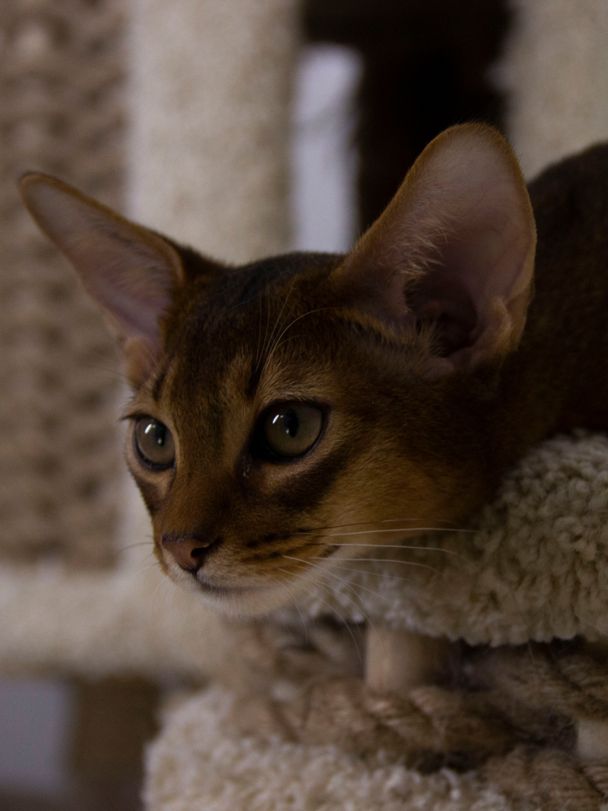
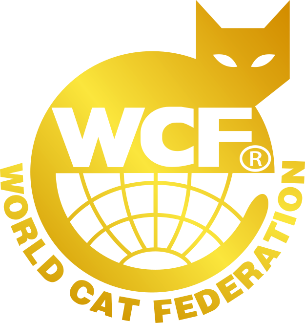
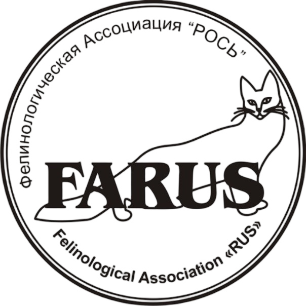
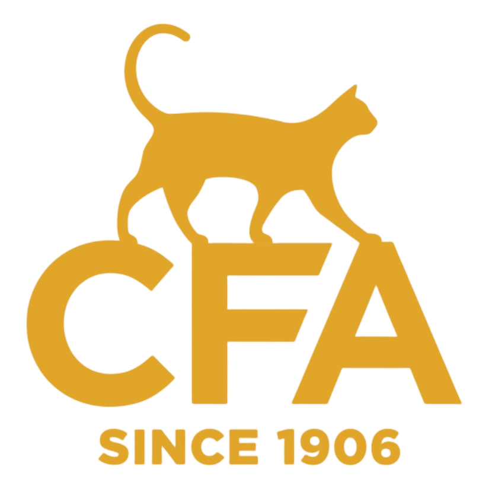

Мы рады приветствовать Вас на нашем сайте питомника абиссинских кошек DOMESTICANI.
Питомник зарегистрирован в системах Farus, WCF, CFA и находится в городе Ярославле между Москвой и Санкт-Петербургом.
С 2017 года ведется работа как со стандартными окрасами так и с окрасами в серебряной вариации. Для работы в серебряном окрасе были привезены кошки из Европы.

8
Лет на рынке
50
Столько котят нашли свой дом
10
Городов


